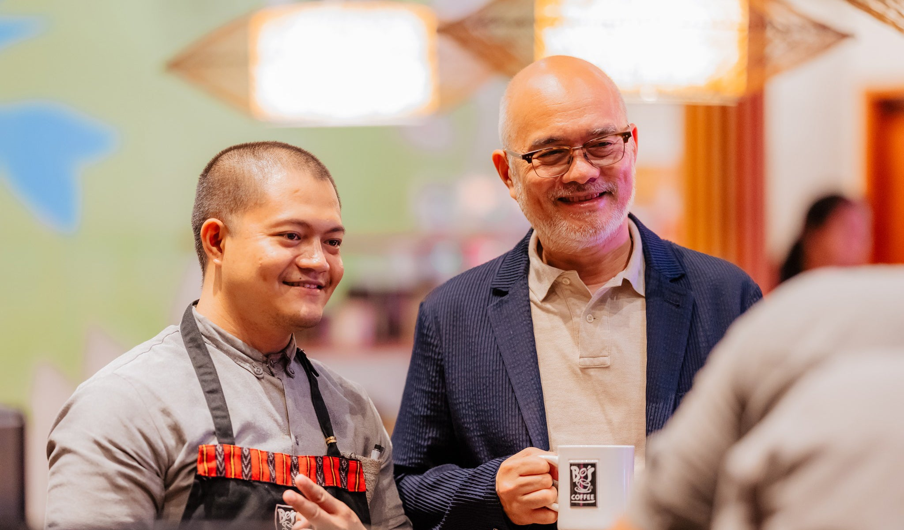

Our Story
Bo's Coffee started in 1996 in Cebu City with a simple belief: the Philippines grows some of the world's most exceptional coffee, and Filipinos deserve to experience it at its best.
Founded by Steve Benitez, Bo's has grown from a single café into a nationwide brand with hundreds of branches — always with a steadfast commitment to supporting local farmers, celebrating Filipino craftsmanship, and sharing the rich heritage of Philippine coffee culture.
Every cup tells the story of the mountains, the farmers, and the communities behind each carefully sourced bean.

What We Stand For
Our Core Values

Farm-to-Cup
We partner directly with local farmers across the Philippine highlands — from Mt. Apo to Kitanglad — ensuring fair trade and traceability in every bag of beans we serve.
Community First
Our cafés are more than coffee shops. They are spaces where communities gather, ideas are shared, and Filipino culture is celebrated every single day.
Uncompromising Quality
From our master roasters to our baristas, every step of our process is guided by an obsession with quality — because you deserve nothing less in your cup.
Our Journey
Milestones
1996
The First Cup
Bo's Coffee opens its doors in Cebu City, Philippines, with a mission to showcase the best of Philippine coffee.
2002
Going National
Expansion beyond Cebu begins, bringing Bo's Coffee to Manila and other key cities across the archipelago.
2010
Farm Partnerships
Formal partnerships established with highland coffee farmers in Bukidnon, Benguet, and Davao del Sur.
2018
100+ Branches
Bo's Coffee celebrates reaching over 100 branches nationwide, cementing its place as the Philippines' premier homegrown coffee brand.
Today
Still Brewing
Continuing to grow, innovate, and share the story of Philippine coffee with every cup served.